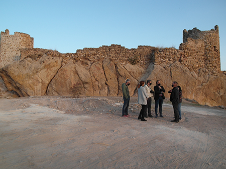

Historia de Torredelcampo
En tiempo de los Íberos, en torno a los siglos VII y VI a C, las tierras que hoy ocupa el término de Torredelcampo se poblaron de un gran número de asentamientos cuya localización ha permitido conocer la organización territorial, la jerarquización y el tipo de sociedad que alcanzó la cultura ibérica. El territorio se organizaba en torno a un gran centro político-económico, el Oppidum de Cerro Villagordo ( Cerro del Pintado) - un poblado fortificado con más de 16 has- alrededor del que se distribuían otros oppidum de menor tamaño, dispuestos de forma estratégica y que abarcaban un gran campo visual: Cerro Miguelico, Atalayuelas, Torrejón, etc.; y de Turris o recintos que controlaban el territorio de forma articulada con los primeros: Cerro Guinea, Cerro Largo, etc. Tras la ocupación romana se mantuvo esta organización del territorio, aunque tan solo se localizan asentamientos secundarios tipo Vicus o Pagus, como Atalayuelas o Cerro Miguelico. En época imperial el término se pobló de explotaciones agropecuarias, tipo villae, entre las que se cuentan: La Muña, Torre Olvida, Cerro San Antón o La Divina; así como de torres, como la de Cortijo Nuevo. El origen del actual emplazamiento de Torredelcampo se relaciona con el oppidum ibérico de Cerro Miguelico. Según los investigadores, este asentamiento fue parcialmente abandonado tras sufrir una profunda crisis entre los siglos I y II d.C., parte de su población se trasladó a la ladera Noreste y al actual solar de Torredelcampo. Los Visigodos se asentaron en Torrecillas. En los primeros tiempos de la dominación islámica se mantuvo esta situación, pero tras los conflictos de finales del Emirato la población se concentró en un solo asentamiento, alquería de Mary Turrus. Una aldea pequeña que fue fortificada en el periodo almohade. Durante el Califato Omeya (s.X) el actual término municipal se adscribiría a dos de los principales distritos fiscales del Alto Guadalquivir, los Aqalim de Martus (Martos) y Yayyan (Jaén). De este periodo del Califato Omeya se encontró una inscripción que se encuentra en el Museo Arqueológico Nacional. Lapida con incripcion funeraria en la parte superior. Una concavidad circular rompe el epigrafe. Posiblemente fue usada como quicialera. Epigrafe distribuido en cinco lineas, caracteres cuficos incisos, rudamente trazados, imitando la escritura monumental. Una greca de rombos corta transversalmente la piedra. El difunto es Ahmad. Revilla, 1932, nº 220: En nombre de Dios el Clemente, el Misericordioso. / Este sepulcro de Ahmed ... / apiádese de él Dios; falleció ... / Almoharran corriendo el año ... / y trescientos. [Confesó que otro Dios sino Allah ...]]. Año 3[76] H = 986 d.C. Esta pequeña aldea, junto a otras muchas situadas en la campiña torrecampeña, se consolidan y fortifican durante el período almohade debido a la relativa proximidad de la frontera con los territorios cristianos. Desde que en 1228 Martos entró a formar parte de las posesiones de la Orden de Calatrava, Torredelcampo y los castillos de su entorno se convertireron en principales enclaves fronterizos en manos musulmanas. La primera documentación conservada, que hace mención al municipio y a lugares de su entorno, data de los años siguientes a la conquista. Se trata de un documento datado en 1251, en el que Fernando III deslinda personalmente los términos de Jaén, Martos y Castillo de Locubín, a causa de los conflictos que surgen entre los freyres calatravos y los vecinos del Concejo de Jaén. En el deslinde efectuado por el monarca castellano se mencionan los lugares de Torre del Campo y la Torre del Berrueco. De su importancia estratégica son testimonio las numerosas construcciones defensivas del periodo: el castillo del Berrueco, uno de los principales baluartes de control del acceso a Jaén, o atalayas como la Torre de Aldehuela.
En el solar de su casco urbano se construyó una pequeña fortificación, identificada como Castillo de la Floresta, que fue destruida a mediados del siglo XX. Tras su conquista por Fernando III el Santo en 1243, Torredelcampo quedó integrada en los territorios de realengo, bajo la jurisdicción del Concejo de Jaén. El castillo del Berrueco fue reformado y ampliadas sus defensas, y se levantaron numerosas atalayas de control: Torre de la Muña, Torre de Cerro Miguelico, Torre de las Torrecillas. Durante el siglo XV Torredelcampo se vería involucrada activamente en las luchas que asolaron el final del reinado de Enrique IV, como tierra de frontera entre Jaén controlada por el Condestable Iranzo, firme partidario del rey, y Martos controlado por la Orden de Calatrava, por lo que el castillo de la Floresta fue centro de negociaciones en distintas ocasiones. Desde principios del siglo XV los vecinos iniciaron los trámites para segregarse de Jaén, pero una Cédula Real emitida por la Chancillería de los Reyes Católicos en 1492 les obligo a permanecer bajo su jurisdicción. En 1479 Isabel la Católica escribe al corregidor de Jaén, Don Francisco de Bobadilla, solicitando que la ciudad le pague tributo por la tenencia de las fortalezas de Torredelcampo, Fuerte del Rey, el Berrueco y Cazalilla. Los pleitos por la segregación continuaron hasta que, el 10 de junio de 1804, Torredelcampo obtuvo el título de Villa de manos del rey Carlos IV. En 1900 tenía una población de 6.454 habitantes y tenía estación ferroviaria.